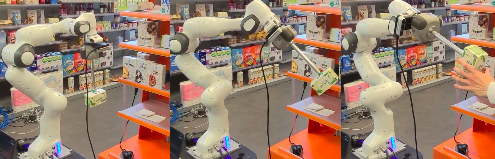
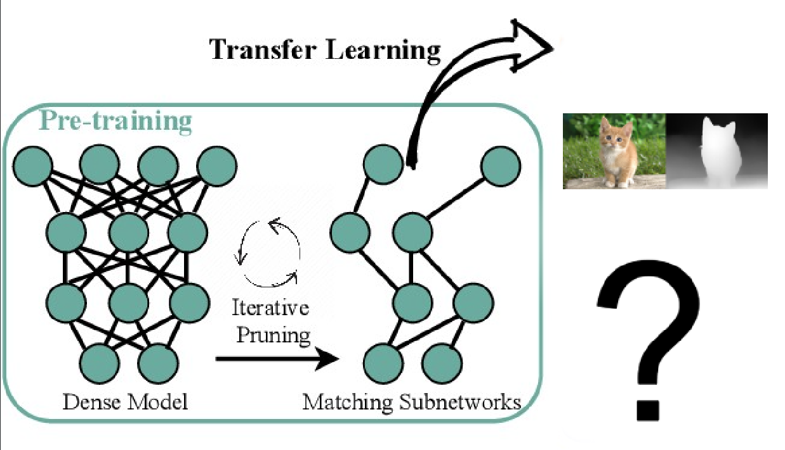
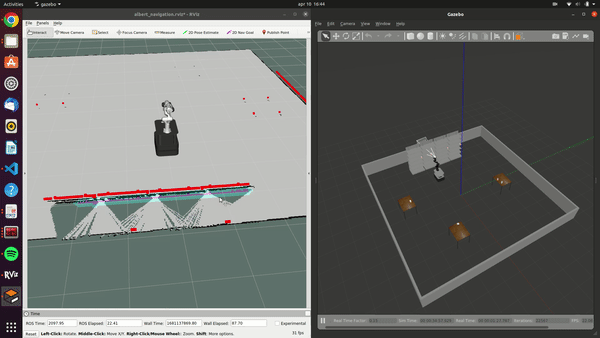
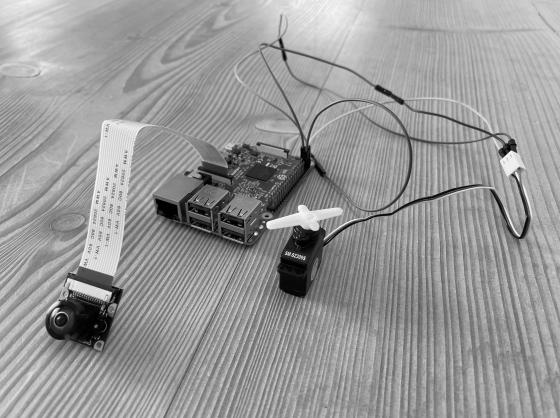
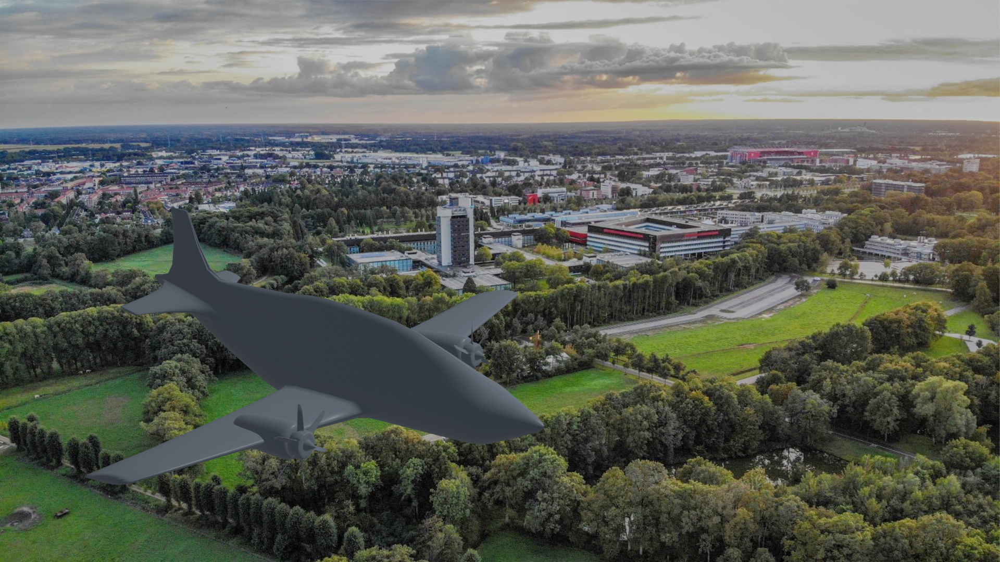
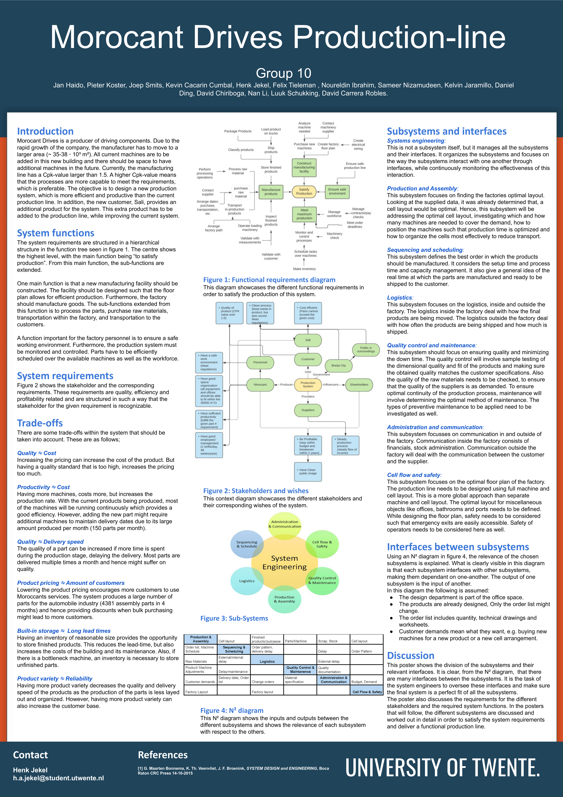
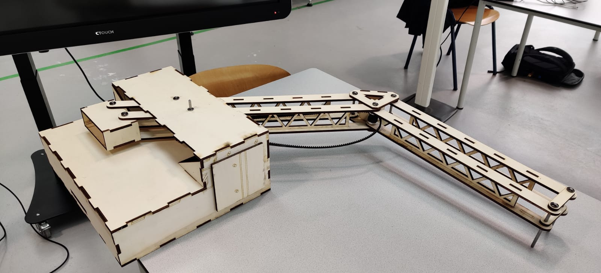
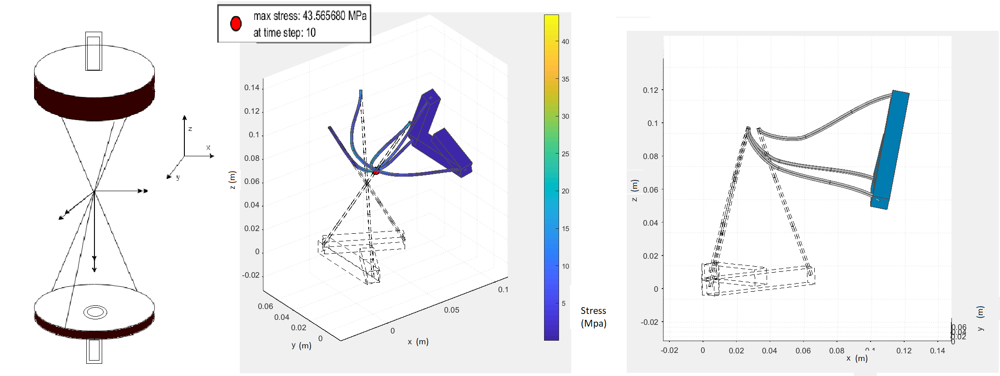
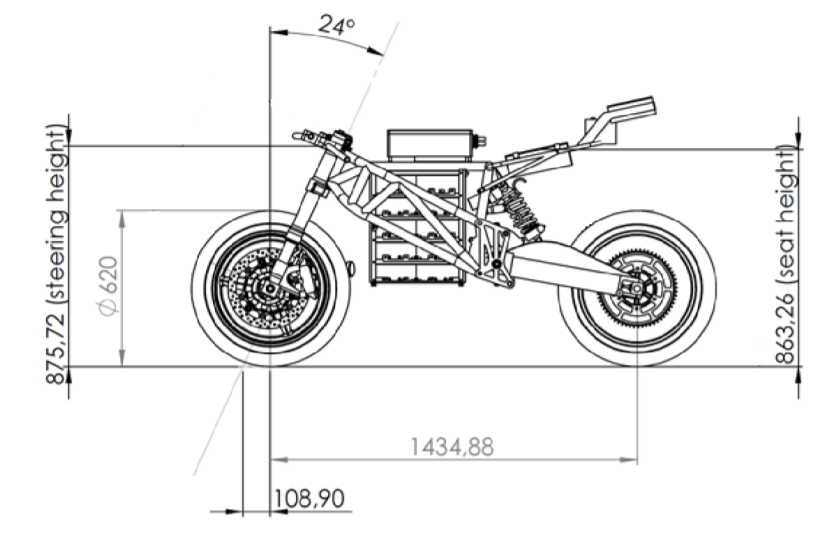

June 21, 2024
Open-source GazeGPT:
Analyzing and Selecting Text-to-Speech, Vision-Language, and Speech-to-Text Models
This literature review evaluates and selects open-source text-to-speech, vision-language, and speech-to-text models to replace proprietary ones used in GazeGPT, a system integrating voice-enhanced smart glasses with eye tracking for personal assistance. The system processes multimodal inputs from a head-mounted eye tracker and a microphone, using gaze data and verbal queries to understand user intent and deliver context-aware responses. Currently dependent on proprietary models like ChatGPT and Elevenlabs, GazeGPT aims to democratize AI by adopting open-source alternatives. The review dissects these models into their fundamental components, offering insights into deep learning history and the evolution from untrainable perceptrons to advanced transformer architectures. It also provides detailed analyses of the best available models for each function, aiming to simplify the complex landscape of modern AI models.
November 10, 2023
Adaptive AI VoiceTrainer:
Enhancing Sales Training Efficiency with Adaptive AI Interactive Voice Response System

This project introduces an adaptive AI phone application developed for KLM, aimed at revolutionizing the training of sales representatives. Utilizing advanced artificial intelligence within a systems-engineered framework, the application facilitates realistic and effective training scenarios. The project commenced with the conceptualization and enactment of an abstract usage scenario, further broken down into detailed deployment and operational phases. Key features include VOIP integration, speech-to-text and text-to-speech conversions, and AI-driven response generation, all meticulously delineated in a functional hierarchy tree and activity diagrams. The iterative development process prioritized real-time interaction, low latency, and high-quality voice output, culminating in an integrated system combining Vosk, ElevenLabs, ChatGPT 4, and Twilio’s Voice API. This innovative system is designed to enhance the training experience, preparing sales representatives to confidently navigate the complexities of unpredictable real-life customer interactions.
July 1, 2023
Albert:
The Next-Gen Supermarket Assistant Integrating Advanced AI for Seamless In-Store and Online Order Fulfillment

The Albert project developed a versatile robotic system for supermarkets, designed to handle both online and in-store customer orders. Featuring an advanced ChatGPT-powered voice interaction system, Albert efficiently processes and responds to customer requests. Its autonomous capabilities include identifying, picking, and placing products, managed by the FlexBE state machine. Equipped with sensors like lidar and stereo cameras, it navigates safely around obstacles and customers. While testing has shown promising results in both simulations and real-world scenarios, further refinement is necessary to address remaining challenges before widespread implementation in supermarkets.
June 20, 2023
Supervised Pre-Training in Depth Estimation:
the Lottery Ticket Hypothesis Applied

In the field of computer vision, pre-trained models have gained renewed attention, including ImageNet supervised pre-training. Recent studies have highlighted the enduring significance of the Lottery Tickets Hypothesis (LTH) in the context of classification, detection, and segmentation tasks. Inspired by this, we set out to explore the potential of LTH in the pre-training paradigm of depth estimation. Our aim is to investigate whether we can significantly reduce the complexity of pre-trained models without compromising their downstream transferability in the depth estimation task. We fine-tune the sparse pre-trained networks obtained through iterative magnitude pruning and demonstrate universal transferability to the depth estimation task, maintaining performance comparable to that of fine tuning on the full pre-trained model. Our findings are still inconclusive.
June 10, 2023
Ethics of the Metaverse:
Effects of Multi-User Virtual Reality on User Autonomy

In this research, we explore how the increasing immersion within the metaverse, a virtual environment combining physical reality, online gaming, augmented reality, virtual reality (VR), and cryptocurrencies, impacts user autonomy. As major tech companies like Meta and Microsoft invest heavily in this technology, the potential societal effects are significant. Using a rights-based ethical framework, we analyze the metaverse's influence on three core aspects of autonomy: knowledge, authenticity, and freedom. Our findings indicate that while the metaverse offers opportunities for enhanced social interaction and knowledge sharing, it also poses substantial risks, such as addiction, social conformity, and compromised personal safety. This study highlights the need for increased public awareness, stricter regulations for younger users, and further research into the long-term psychological impacts of extended VR immersion.
May 2, 2023
Haptics in Tele-operation:
Effects of Time Delay on the Performance of a Deep Sea Welding Task

This study evaluates the effect of time delay on the performance of a teleoperated robot arm in simulated deep sea welding tasks. Given the hazardous nature of deep sea welding, the research explores a safer alternative using teleoperation. The experiment involved 10 participants controlling a robot arm to follow a set trajectory under varying time delays. Performance was measured using mean absolute error and task completion time. Results show a significant increase in both metrics with increased time delays, indicating a decline in operational efficiency. The study highlights the challenges of latency in teleoperated systems and suggests avenues for future research, including the impact of training and trajectory learning on performance.
April 28, 2023
EfficientNetV2:
Darts for Neural architecture Search

In this project, I developed software to utilize differentiable architecture search (DARTS) for determining the best building block for a cell. Specifically, I compared three types of blocks: Fused-MBConv, MBConv, and Depthwise Separable Convolution. The motivation behind the project was to investigate the developmental process of the Fused-MBConv block, which is a superior architecture building block used in the state-of-the-art image recognizer, EfficientNetV2, developed by the Google brain team. I conducted a differentiable architecture search to evaluate the performance of these three blocks on the Fashion-MNIST dataset. My research aimed to prove that the DARTS algorithm would choose the best block among the three types that were evaluated. However, the findings indicated that for the reduce cell, the algorithm found a mixture of blocks, and for the normal cell, it only used the weakest block, which is the Depthwise Separable Convolution, for unknown reasons.
April 10, 2023
Automated retail store restocking:
Software Design with PDDL and ROSPlan

This project presents an automated solution for retail store restocking using PDDL (Planning Domain Definition Language) and ROSPlan, led by Henk Jekel. It aims to address labor shortages in the retail sector due to an aging population. The system enables a robot to perform restocking tasks in a simulated store environment, determining the appropriate placement of items based on predefined store rules. The solution uses a Python-based ontology for product classification and a PDDL knowledge base for initial environment setup. Despite facing technical challenges in simulation, the project demonstrates the feasibility of using knowledge representation and reasoning for efficient and adaptable automated restocking in retail settings.
March 31, 2023
Autonomous Drone:
Software Design of a quadcopter Agent

In this project, an innovative obstacle avoidance system for drones was developed, focusing on maximizing distance in a 10-minute flying competition. Two approaches, optical flow and color filtering, were investigated for their effectiveness in obstacle detection. Optical flow involved calculating distances to obstacles during circular flight, while color filtering recognized specific object colors. Despite the efficiency of optical flow, color filtering was chosen for the contest, leading to a successful 67-meter flight. The project underscores the potential of advanced navigation systems in enhancing drone safety and efficiency in competitive and practical scenarios.
Januari 20, 2022
Navigating the Parking Lot:
A Comparative Study of RRT and RRT* Motion Planning for Autonomous Robots

This project presents an implementation and comparison of two motion planning algorithms, RRT and RRT*, for autonomously navigating a robot in a parking lot scenario. Using a kinematic bicycle model and a PD controller, the algorithms were developed to guide the robot around static obstacles. The findings indicate that while RRT* generates shorter paths, it requires more computational time compared to RRT. The study concludes with suggestions for future enhancements using advanced variants of these algorithms.
October 30, 2022
Pathfinder Prius:
Navigating the Future with ROS-Powered Autonomous Driving

In this university project, a Prius vehicle was programmed for autonomous driving in a simulated environment using the Robot Operating System (ROS). The vehicle was equipped with a front-facing camera and a 360-degree LIDAR sensor for detecting obstacles and pedestrians. The project involved developing three ROS packages: "opencv_person_detector" for detecting individuals in camera images, "pcl_obstacle_detector" for identifying obstacles in LIDAR point clouds, and "control_barrel_world" for vehicle control based on sensor inputs. The goal was to autonomously navigate a path marked by cones, avoiding obstacles and stopping for pedestrians. The project is showcased in a simulation video.
July 1, 2021
BSc Thesis:
The use of deep learning for person detection and gender classification
using RGB images to support the visually impaired.

This paper presents the deep learning approach to help the visually impaired in an object detection
task: recognising the gender of people in their proximate surrounding. By use of images coming from a RPI
WWCAM2 monocular camera, the person is first detected , i.e. localized in the image, and then classified to
one of the two genders. In order to perform gender detection in real-time, the use of transfer learning together
with a single-stage object detection algorithm was investigated. Based on the number of processed frames per
second (FPS) and the mean average precision (mAP), it was concluded that fine-tuning a pre-trained YOLOv4
algorithm on customized versions of the Pascal VOC 2007 dataset and the CelebA dataset is best suited for this
task.
February 2, 2021
Aircraft Engineering:
Design of hydrogen airplane

In the conceptual design project for a climate-neutral regional airliner, our team from the University of Twente was tasked with developing a sustainable aircraft for Twente In The Air Netherlands (TITAN), aiming to meet stringent environmental standards set by Airbus. The project encompassed the entire design process, from defining requirements and technical specifications to generating concepts and finalizing a feasible design. This included meticulous considerations of mass estimation, flight envelope, and performance metrics. The design focused on integrating hydrogen combustion engines to ensure zero CO2 emissions, optimizing aerodynamics, and enhancing passenger comfort and safety. Through iterative testing and evaluation, we achieved a conceptual design that aligns with both airworthiness standards and the ambitious climate goals, paving the way for a new era of sustainable aviation.
February 11, 2021
Morocant Drives Production Line:
Redesigning for Expansion

The Morocant Drives project aimed to design and optimize a new production system to accommodate the company's rapid expansion. This collaborative effort involved relocating to a larger facility while integrating existing machinery and allowing for future growth. Our goal was to create a more efficient and productive production line, incorporating a new product for a major customer, Sali. Key project elements included developing a hierarchical function tree, balancing trade-offs such as quality versus cost and productivity versus delivery speed, and ensuring seamless subsystem integration. By utilizing systems engineering principles, we ensured that stakeholder requirements were met, resulting in a robust, scalable production system for Morocant Drives.
November 12, 2020
Biorobotic arm for DMD patients:
Hardware and Software Design

In this project, a team of students from the University of Twente designed and developed a biorobotic arm to assist individuals with Duchenne Muscular Dystrophy (DMD) in controlling a computer mouse. The arm is controlled via electromyographic (EMG) signals, allowing users to move the cursor and perform click actions through muscle contractions. The design process involved stakeholder analysis, user requirement gathering, and the development of multiple concepts, ultimately selecting a parallelogram-based arm structure for its stability and ease of use. The arm incorporates a PID-controlled motor system and an EMG signal processing chain to ensure precise and responsive movements. Despite facing challenges in hardware integration and mechanical stability, the final prototype demonstrated the feasibility of using robotic assistance to enhance the independence and quality of life for individuals with DMD. Further refinements are suggested to improve the system's robustness and ease of use in real-world applications.
November 8, 2019
Shoulder Prosthesis:
Design of a Precision Mechanism

In the shoulder prosthesis design project, our team aimed to create a prosthesis using flexure mechanisms that closely mimic the natural movement of a human shoulder. The design incorporates six wire flexures arranged to provide three translational constraints and three rotational degrees of freedom, similar to a ball joint. This configuration allows for significant rotational movement while maintaining structural integrity under stress, crucial for preventing shoulder dislocation. The prosthesis can withstand a force of 300N, equivalent to supporting a 30 kg mass, ensuring durability and functionality. The simplified yet robust design emphasizes the balance between flexibility and strength, ensuring the prosthesis can operate effectively within the human body.
November 3, 2019
FSO Ground Station:
Development of a Low-Cost Precision Mechanism

The project aimed to develop a low-cost Free Space Optical (FSO) communication ground station for satellite tracking, specifically designing a mechatronic system to steer a mirror for laser communication. Key requirements included achieving a rotation speed of 19.5 mrad/s and a maximum tracking error of 25 µrad, with actuator forces and voltages not exceeding ±4.63 N and ±24 V, respectively. The system uses a VCM actuator and two leaf springs to maintain equilibrium and allow the necessary degree of freedom for tracking. The dynamic and control aspects were rigorously modeled, with a PID controller and feed-forward system ensuring precise and stable operation. Despite minor translational movements due to leaf spring deformation, the system met the essential performance criteria, making it a viable solution for low-cost satellite communication.
June 30, 2019
Ship to Shore Crane:
Design and Mechanics
This project, of which I was the team manager, focuses on enhancing the design of a Ship to Shore (STS) crane through a series of detailed engineering processes. The team developed three concepts for booms, trolleys, and hoisting mechanisms, ultimately selecting a functionality concept for further refinement. Utilizing SolidWorks for detailed sketches, they conducted rigorous material assignments and calculations, considering factors like yield strength, weldability, and corrosion resistance. FEM calculations were performed to ensure structural integrity under loads up to 100 tons. The chosen design features a truss boom made from HSLA steel, ASTM A656, supported by a comprehensive motor and gearbox system, including a Simotics SD motor. The project emphasizes durability, efficiency, and maintainability, suggesting possible future improvements like automated systems to further enhance crane productivity.
June 29, 2019
Electric superbike:
Design and Mechanics

The project on the design and mechanics of an electric superbike commenced with a concept phase using a morphological diagram to create three concepts based on the requirements, selecting a trellis frame powered by a PMAC motor. The motor, positioned perpendicular to the bike's movement, connects to a two-gear gearbox driving the rear wheel via a chain. Disc brakes were selected for deceleration. In the materialisation phase, detailed design of the drive train and frame was conducted. Key considerations included maximum static friction, power and torque calculations, material selection (25CrMo4 AISI 4130 steel for the shaft and gears), and stress analysis using Mohr’s circle. For frame design, FEM analysis confirmed the results of hand calculations, ensuring stiffness and meeting weight requirements (35.8 kg) with reinforced neck using Carbon steel AISI 1015. The swing arm design incorporated deep groove ball bearings, and a specific weld size was calculated for the frame's structural integrity. Conclusions highlighted the importance of optimizing grip, speed, acceleration, strength, and stiffness, and recommended further load case analyses and adjustments to reduce weight and improve performance.